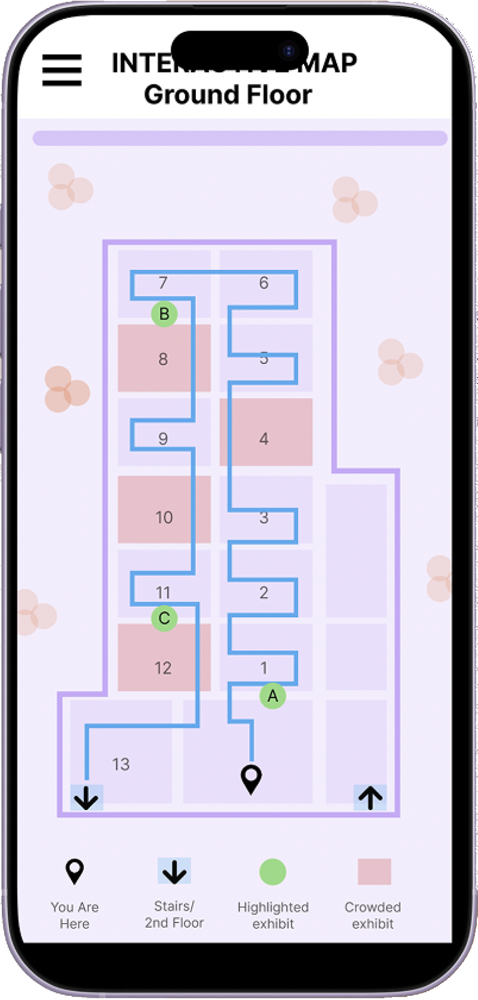
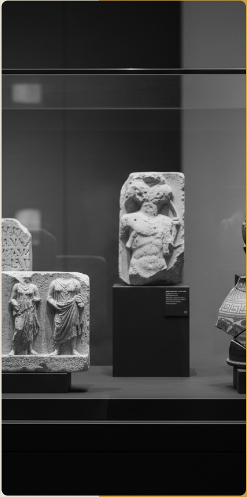
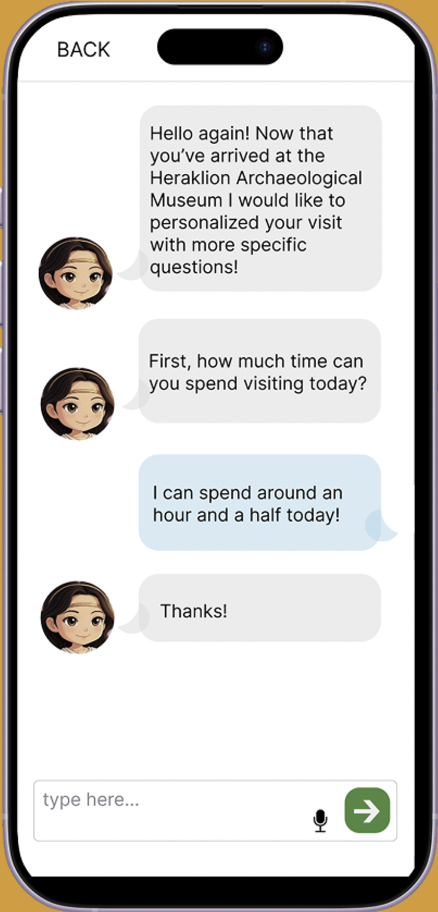
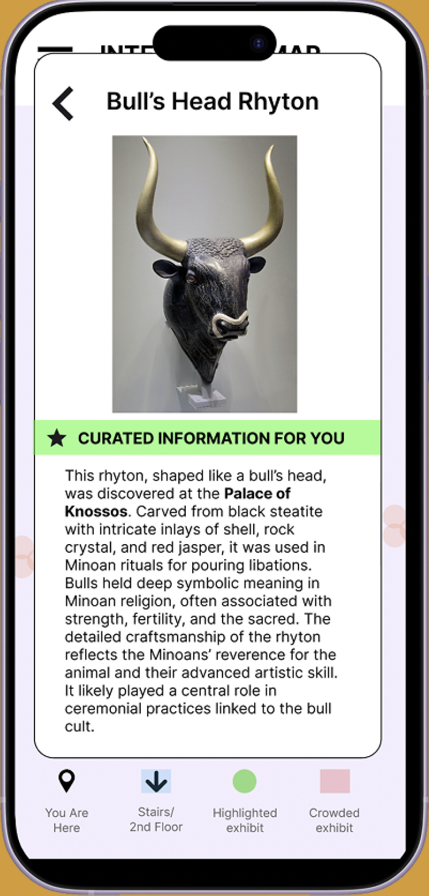

Mobile / Research-Led
Herakify
A museum companion app for the Heraklion Archaeological Museum. I designed an interactive map, personalized quizzes, and an AI chat guide so visitors could find what mattered to them without a guide.

Role
Platform
Timeline
Tools
01 / Challenge
Challenge
First time visitors were overwhelmed by dense exhibit text and disoriented by a layout they'd never seen. There was no way to shape the visit around what someone was actually interested in, or around the time they had.

02 / Solution
Solution
I started with contextual inquiries — 15+ sessions with tourists, local business owners, and UI experts — and built a persona around the visitor who kept showing up: someone who wants to understand what they're looking at, and who hates vague signage, confusing layouts, and crowds. That framing turned into two design problems. How do we improve the museum visit while keeping people off their phones? And how do we personalize without slowing anyone down? Every feature below is an answer to one of those two questions.
- User Research
- Interaction Design
- Prototyping
Interactive Floor Map
The map exists to add to the visit, not compete with it. It shows a route built from your quiz answers, flags which exhibits are highlighted for you, and marks which rooms are crowded right now. Early versions failed usability testing on visual hierarchy — so I rebuilt it with higher contrast, standardized button styles, and cleaner route guidance.

AI Chat Guide
Testing showed the quiz worked but felt like a chore to some visitors. So I built a conversational alternative that asks the same things in a more casual way — how long you have, what you're curious about — and offered both. Some personalization, two levels of effort, so people could choose how much they wanted to give.

Curated Exhibit Detail
The hardest feature to get right. Visitors wanted more context than a wall label but wouldn't stand and read an essay. This gives plain-language background on a single object, surfaced only for exhibits your answers suggested you'd care about.
03 / Impact
Impact
15+
Contextual Inquiries
3
User Groups
1
Design, End to End
I worked across four stages: discovering user needs, building three core features, testing and iterating, then designing for continuity so the features felt like one product rather than three. I measured success against three objectives — personalization, usability, and retention — and every round of testing sent me back to change something. The quiz got shorter. The map got clearer. The chat got more casual.
What I Learned
What people say they want and where they actually got stuck are two different things. The quiz tested well on paper and still felt like a chore in practice. I also learned what I didn't solve: map interaction still needs work, and the AI guide is useful for personalization but users wanted it present in every flow, not just at the start.